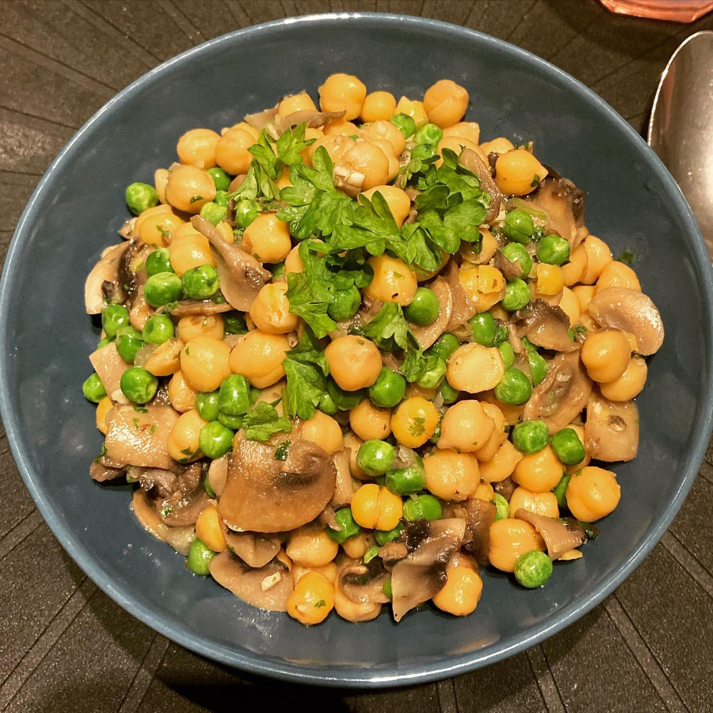

Chickpea Risotto

This recipe is one of my favorites. It's easy, healthy and inexpensive to make and it keeps well in the refrigerator!
Ingredients
- 2x15 oz cans chickpeas
- 0.25 yellow onion
- 8 oz button mushrooms
- 3/4 cup aquafaba
- 2 Tbsp parsley
- 2 tsp olive oil
- pepper
- 2 cups fozen peas
- 1 garlic clove
- 2 Tbsp vegetable oil
- 6 Tbsp parmesan grated
- 3 Tbsp unsalted butter
- salt
Preperation
- Slice the mushrooms. Add the vegetable oil to a hot pan, then the mushrooms. The mushrooms should sizzle when placed in the pan, if not, the pan should be hotter so that the mushrooms roast.
- Cut the onion & garlic. Add to pan. Then salt & pepper.
- Turn heat to low.
- Drain the chickpeas, making sure to catch the aquafaba (bean water in the can) in a bowl of other container. Add the drained chickpeas to the pan.
- Add the aquafaba to the pan. Add more than recommended if you would like the dish to be a bit thicker.
- Add water & turn up the heat to bring out to a simmer.
- Grab the frozen peas from the freezer & add to the pan.
- Add the butter & grated parmesan cheese to the pan. Let the dish thicken.
- Turn off the heat, then chop & mix in parsley.
- Plate. Top with parmesan & olive oil to taste.